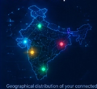
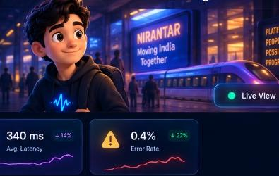
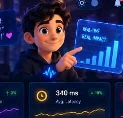
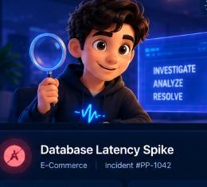
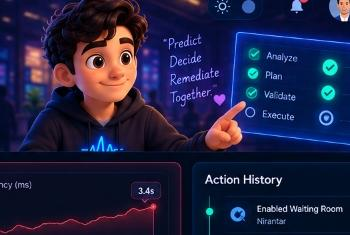

LIVE RESILIENCE COMMAND CENTER
| METRIC | BEFORE | DURING | AFTER | RELIEF % |
|---|---|---|---|---|
| 💻 CPU | 78.0% | 68.6% | 48.2% | -38.2% |
| ⏱️ latency | 2.41s | 1.93s | 1.62s | -32.8% |
| 🗄️ DB utilization | 96.0% (48 c) | 84.5% (42 c) | 71.0% (35 c) | -26.0% |
| 📥 queue depth | 8,420 | 6,904 | 4,120 | -51.1% |
| ⚡ RPS | 4,820 | 4,627 | 4,500 | -6.6% |
| ❌ error rate | 5.8% | 4.3% | 0.4% | -93.1% |
DATABASE CONNECTION POOL EXHAUSTION
M4 Root Cause Analysis · Topological Causal Propagation DAG
DB POOL 🔴
CRITICAL BOTTLENECK: 50-connection semaphore exhausted; queries wait on lock queue.
PortalPulse Autonomous Resilience · Technical Blueprint
┌─────────────────────────────────┐
│ IEMCRP Exam Result Portal │
│ Result-Day Concurrency Surge │
└────────────────┬────────────────┘
│
▼
┌─────────────────────────────────┐
│ M1 Telemetry Ingestion Engine │ (Ring Buffer + SQLite WAL)
└────────────────┬────────────────┘
│
▼
┌─────────────────────────────────┐
│ M2 Multi-Horizon Forecaster │ (Trained XGBoost Regressor)
└────────────────┬────────────────┘
│
▼
┌─────────────────────────────────┐
│ M3 Unsupervised Anomaly Engine │ (Isolation Forest [0, 1])
└────────────────┬────────────────┘
│
▼
┌─────────────────────────────────┐
│ M4 Root Cause Analysis │ (XGBoost + NetworkX DAG)
└────────────────┬────────────────┘
│
▼
┌─────────────────────────────────┐
│ M5 Tactical Action Policy │ (Deep PyTorch MLP: 11 Actions)
└────────────────┬────────────────┘
│
▼
┌─────────────────────────────────┐
│ M6 Deterministic Safety Layer │ (Cooldown, Token Bucket, HITL)
└────────────────┬────────────────┘
│
▼
┌─────────────────────────────────┐
│ M7 Closed-Loop Actuator │ (Digital-Twin SDK Middleware)
└────────────────┬────────────────┘
│
▼
CHANGED SYSTEM STATE
(Relieved DB Pool / Restored SLA)
│
└──────────────→ FEEDBACK TO M1 TELEMETRY
Raw Telemetry Stream (RPS, Latency, CPU, RAM, DB Connections, Queue Length, Error Rate)
│
▼
┌────────────────────────────────────────────────────────┐
│ In-Memory Ring Buffer (1,800 entries) │
│ Thread-Safe Circular Deque (30-min window) │
└───────────────────────────┬────────────────────────────┘
│
┌───────────────┴───────────────┐
▼ ▼
┌───────────────────────────┐ ┌───────────────────────────┐
│ Real-Time Derived Feats │ │ SQLite WAL Persistence │
│ - rolling_mean_5m │ │ `telemetry_history.db` │
│ - rolling_std_5m │ │ WAL mode, synchronous=NORM│
│ - rate_of_change (deriv) │ │ SLA breach index │
│ - error_rate_acceleration │ └───────────────────────────┘
└───────────┬───────────────┘
│
▼
Standardized Input Vector Schema
(Ready for M2 Forecasting & M3 Anomaly Detection)
Incoming Telemetry & Engineered Lag Features
│
▼
┌────────────────────────────────────────────────────────┐
│ Feature Standardizer & Vectorizer │
│ (active_users, requests_per_sec, cpu, ram, db_pool) │
└───────────────────────────┬────────────────────────────┘
│
▼
┌────────────────────────────────────────────────────────┐
│ XGBoost Multi-Target Regressor (`forecaster.pkl`) │
│ Tree depth=6, n_estimators=100, lr=0.05 │
└───────────┬───────────────────┬───────────────────┬────┘
│ │ │
▼ ▼ ▼
Horizon: +5m Horizon: +10m Horizon: +15m
(Predicted RPS, (Predicted RPS, (Predicted RPS,
p95, CPU, DB) p95, CPU, DB) p95, CPU, DB)
│ │ │
└───────────────────┼───────────────────┘
│
▼
Capacity Pressure Index (CPI) Calculator
Safe Capacity: 13,200 VUs | Threshold: 80%
│
▼
`ForecastResult` Pydantic Payload
(TimeToBreach: "~7 min", RiskLevel: HIGH)
Live System Metric Vector (8 Dimensions):
[cpu_percent, ram_percent, requests_per_sec, response_time, error_rate, db_latency, db_connections, queue_length]
│
▼
┌────────────────────────────────────────────────────────┐
│ Nominal SLA Baseline Standardizer (Z-Score) │
└───────────────────────────┬────────────────────────────┘
│
▼
┌────────────────────────────────────────────────────────┐
│ Isolation Forest Unsupervised Model (`isolation_forest.pkl`)
│ n_estimators=120, contamination=0.08 │
└───────────────────────────┬────────────────────────────┘
│
▼
Raw Decision Function Inversion:
Score = clamp((0.5 - decision_function) * 1.5, 0.0, 1.0)
│
┌───────────────┴───────────────┐
▼ ▼
Continuous Anomaly Score Top Deviation Contributors
- NOMINAL (< 0.45) Rank-ordered by relative
- ELEVATED (0.45 - 0.70) Z-score deviation:
- WARNING (0.70 - 0.85) 1. db_connections (+4.2σ)
- CRITICAL (>= 0.85) 2. response_time (+3.8σ)
Anomalous Telemetry & Severity Flags
│
▼
┌────────────────────────────────────────────────────────┐
│ Supervised XGBoost Classifier (`xgboost_rca.pkl`) │
│ Objective: multi:softprob (8 classes) │
└───────────────────────────┬────────────────────────────┘
│
▼
Class Probabilities: [DATABASE: 91.2%, TRAFFIC_SPIKE: 4.1%, NETWORK: 2.8%, ...]
Primary Cause Identified: `DATABASE`
│
▼
┌────────────────────────────────────────────────────────┐
│ NetworkX Causal Dependency Graph (`nx.DiGraph`) │
└───────────────────────────┬────────────────────────────┘
│
DAG Traversal & Pathing:
│
RESULT DAY
│
▼
TRAFFIC SPIKE
│
▼
API LOAD
/ \
▼ ▼
DB POOL 🔴 CPU (38% nominal)
│
▼
QUERY WAIT
│
▼
LATENCY
│
▼
503
│
▼
Active Causal Propagation Chain Isolated:
`RESULT_DAY → TRAFFIC_SPIKE → API_LOAD → DB_POOL → QUERY_WAIT → LATENCY → ERR_503`
Input State Vector (M1 Derived + M2 CPI + M3 Anomaly Score + M4 RCA Probabilities)
│
▼
┌────────────────────────────────────────────────────────┐
│ M5 PyTorch Deep Policy MLP (`action_mlp_policy.pt`) │
│ Linear(16 -> 64) -> ReLU -> Linear(64 -> 32) -> Linear(32 -> 11) Softmax │
└───────────────────────────┬────────────────────────────┘
│
Candidate Action: `ENABLE_WAITING_ROOM` (Confidence: 97.2%)
Blast Radius: `MEDIUM`
│
▼
┌────────────────────────────────────────────────────────┐
│ M6 Deterministic Safety Layer │
└───────────────────────────┬────────────────────────────┘
│
1. Confidence Gate: Is confidence >= 80%? ─────────────► [YES: 97.2%]
2. Flapping Cooldown: Last identical action > 300s? ────► [YES: No recent action]
3. Token Bucket Ingress: Rate limiter within bounds? ──► [YES: Tokens available]
4. Blast Radius Check: High blast radius? ──────────────► [NO: Medium - Auto-Approved]
5. Replica Boundary: Pod replicas within [2, 24]? ──────► [YES: Preserved]
│
▼
Validated Action Execution Permitted:
`PASS (SAFE TO ACTUATE)`
┌───────────────────────────────────────────────────────────────────────────────┐
│ PHASE 1: TRAFFIC │
│ Result-day exam surge generated by Locust / Live Users (12,481 VUs, 4,820 RPS)│
└──────────────────────────────────────┬────────────────────────────────────────┘
│
▼
┌───────────────────────────────────────────────────────────────────────────────┐
│ PHASE 2: TELEMETRY │
│ M1 collects p95 latency = 2.41s, DB pool = 96%, HTTP 5xx = 5.8% │
└──────────────────────────────────────┬────────────────────────────────────────┘
│
▼
┌───────────────────────────────────────────────────────────────────────────────┐
│ PHASE 3: PREDICTIVE INFERENCE │
│ M2 forecasts capacity breach in ~7 min | M3 detects anomaly score = 0.94 │
└──────────────────────────────────────┬────────────────────────────────────────┘
│
▼
┌───────────────────────────────────────────────────────────────────────────────┐
│ PHASE 4: ROOT CAUSE & POLICY │
│ M4 isolates DB Pool exhaustion (91.2%) | M5 recommends ENABLE_WAITING_ROOM │
└──────────────────────────────────────┬────────────────────────────────────────┘
│
▼
┌───────────────────────────────────────────────────────────────────────────────┐
│ PHASE 5: DETERMINISTIC SAFETY │
│ M6 validates confidence (97.2% > 80%), enforces cooldown, approves action │
└──────────────────────────────────────┬────────────────────────────────────────┘
│
▼
┌───────────────────────────────────────────────────────────────────────────────┐
│ PHASE 6: CLOSED-LOOP ACTUATION │
│ M7 executes ENABLE_WAITING_ROOM on SDK middleware │
│ Trajectory: PRE-ACTION ──► CRITICAL ──► ACTUATING ──► STABILIZING ──► NOMINAL│
└──────────────────────────────────────┬────────────────────────────────────────┘
│
▼
┌───────────────────────────────────────────────────────────────────────────────┐
│ PHASE 7: SYSTEM STABILIZATION │
│ DB Pool: 96% ──► 71% (-26% relief) | Latency: 2.41s ──► 1.62s (-32.8% relief)│
│ SLA restored | Status: RECOVERY VERIFIED │
└──────────────────────────────────────┬────────────────────────────────────────┘
│
▼
┌───────────────────────────────────────────────────────────────────────────────┐
│ PHASE 8: FEEDBACK / NEXT CYCLE │
│ Cycle #043 initiates, ingests post-relief telemetry, maintains nominal state │
└───────────────────────────────────────────────────────────────────────────────┘
Good morning, Pratay! 👋
Here's what's happening across your portals today.
Portal Capacity Index (PCI)
● SAFE🔍 Dual-Perspective Observability
Controlled Capacity Benchmark & Closed-Loop AIOps Proof
Out-of-Process Worker IsolationPortal Health Map
● Live
Traffic Overview
System Resources
(All Portals)Connected Portals
View All →Recent Incidents
View All →Recommended Actions
View All →Ready to connect a new portal?
Get started in minutes with our lightweight pluggable SDK.
+ Connect PortalMy Portals
Manage and monitor all your connected portals.
Universal schema adapter guarantees instant observability without code modification.
Supported Platforms
Nirantar
Healthy
❤️ Continuous Portal Health Score
EXCELLENT👥 Human User Impact Assessment (PRD-03 §2)
Live Session Telemetry📐 HOW THIS PORTAL WORKS (Dynamic Architecture DAG)
MICROSERVICESDistributed microservices architecture with decoupled exam delivery, distributed Redis caching, and horizontal autoscaling capabilities.
Known Vulnerabilities & Bottlenecks:
Supported Mitigation Strategies:
💬 Observability Avatars (State-Reactive)
Domain-specific agents explaining live telemetry, forecast horizons, root-cause graphs, and safety guardrails.
🕒 Unified Incident Decision Timeline (PRD-03 §8)
Chronological decision trace linking telemetry ingestion, ML prediction, anomaly detection, RCA, and verified mitigation.
🧠 Explainable SRE Model Pipeline (M1 — M7)
Inputs, outputs, confidences (%), measured inference time (ms), model consensus, and automated rollback state.
Traffic & Usage
System Resources
Predictive Insights
BETATraffic expected to rise
Nirantar's traffic is predicted to increase by 2.1x in the next 20 minutes.
Possible latency increase
Database latency may exceed 500 ms within 30 minutes due to rising load.
Recent Events
Portal Capabilities
Monitoring
Real-time telemetry across all your portals.

Traffic Overview
Portal Status
System Resources
Recent Alerts
Autonomous Traffic, Capacity & Chaos Lab
PRD-02 & PRD-03Stress Nirantar & IEMCRP using Locust multi-persona traffic engine. Observe empirical degradation knee points and closed-loop AIOps recovery.
🛠️ Scenario Builder (Locust Multi-Persona)
Locust Traffic Engine📜 Official Capacity Certificate (PRD-02 §6 & PRD-03 §4)
💥 One-Click Disaster Drill (PRD-02 Acceptance)
Real DB Semaphore ContentionFills all 50 database pool slots on IEMCRP. Watch PortalPulse detect the starvation, recommend Static Fallback Divert, execute it via the Actuator, and verify recovery.
⏱️ Scenario Execution History & Replay (PRD-02 §10)
Review past capacity discoveries, compare runs side-by-side, or replay previous stress sequences.
| SCENARIO ID | PORTAL | NAME | VUs | PEAK RPS | P95 LATENCY | 5xx ERRORS | AUTONOMOUS MITIGATION | STATUS | ACTION |
|---|---|---|---|---|---|---|---|---|---|
| Loading scenario history... | |||||||||
Incidents
Detect. Understand. Resolve. Keep every portal running.

Database Latency Spike
CriticalAction Center
AI-recommended actions to keep your portals running smoothly.

Add Read Replica
HighDatabase latency has increased by 3.1x due to rising active connections. Adding a read replica can offload traffic.
Scale Worker Instances
MediumTraffic is predicted to increase by 2.1x in the next 20 minutes. Scaling now can prevent performance degradation.
Action History
🛡️ Safety & Policy Checks
Integrations
Connect Your Portal
Get started in minutes. Works with any web portal.
from portalpulse_sdk import PortalPulseAgent agent = PortalPulseAgent( portal_name="Your Portal", api_key="pp_sk_7f3a9d2e4b8c1f0a...", base_url="http://localhost:8000" ) agent.start() # Starts sending telemetry
🎉 Portal Connected!
Your portal is now live on PortalPulse. Start monitoring, get predictions, and keep your users happy!
PortalPulse is framework agnostic. Use our HTTP API or custom SDK.
Platform Settings
Configure SLA thresholds, autonomous safety limits, and notifications.